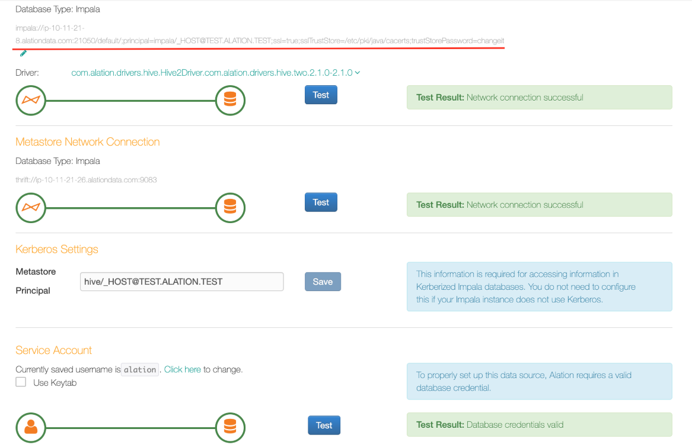
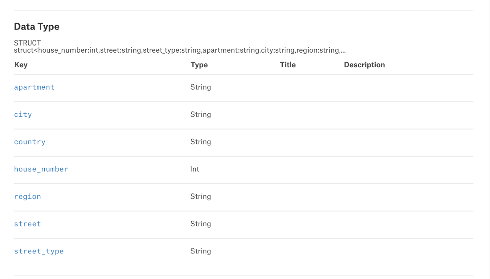
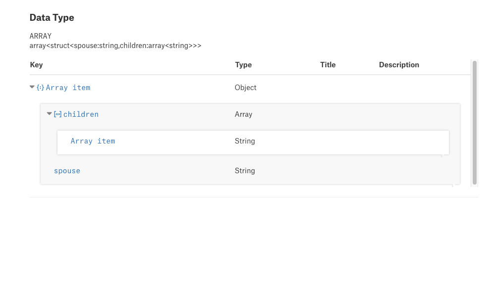

Impala¶
Required Information¶
To configure an Impala data source in Alation, you need the following information:
A service account with the required privileges. See Service Account.
Hostname or IP address of the host where an Impala daemon is running. Use the hostname or IP of any
impaladin your cluster.Port number. Default: 21050
Hive Metastore URI in the Thrift format:
thrift://<METASTORE_HOST>:<port>If using TLS/SSL, the SSL certificate for the Impala endpoint. See Using SSL.
If using Kerberos:
Make sure the pre-configuration for Kerberos has been done: Configuring Kerberos for Data Source Authentication.
Kerberos Service Principal
Metastore Principal
If using keytabs, the appropriate keytab for the service account. You will need to upload it to Alation.
Query Log Ingestion requires additional setup. See Prerequisites For QLI.
Prerequisite¶
Complex Data Type Extraction¶
Applies from 2021.4
Do the following steps to enable the flag to extract the struct and array data types from Impala data source during the Metadata Extraction:
Enter the Alation shell:
sudo /etc/init.d/alation shell
Using alation_conf, set the struct and array data type flag to true.
alation_conf alation.feature_flags.enable_generic_nosql_support -s true
Note
It does not require any restart.
Set the struct and array data type flag to false to disable this feature.
alation_conf alation.feature_flags.enable_generic_nosql_support -s false
Service Account¶
Alation recommends creating a service account prior to adding your Impala data source to the Catalog. The service account should have enough permissions to run MDE, Profiling, and QLI. It requires:
SELECT permissions on all schemas which you plan to extract into the Catalog (for MDE and Profiling);
permissions to READ the HDFS location where the Impala logs are stored (for QLI);
READ, WRITE, and EXECUTE permissions for the Hive external table.
permissions to access to the Hive Metastore
Note
For more information on Hive external tables, see, for example, Comparison between Hive Internal Tables vs External Tables.
Kerberized Impala¶
Alation recommends creating the service account in the same realm as the one used by Impala users.
Using SSL¶
Alation requires the SSL certificate to the Impala endpoint to be added to the certificate truststore on the Alation server.
To connect to Impala over SSL in Alation:
Work with your CDH administrator to gather the required SSL certificates from the Hadoop cluster. The following certificates in the PEM format are required:
Impala TLS/SSL Server Certificate File
SSL/TLS Certificate for Impala Daemon Web Server
SSL/TLS Certificate for Catalog Server Web Server
SSL/TLS Certificate for Statestore Daemon Web Server
Note
To obtain the paths to the certificates, go to Cloudera Manager > Impala > Configuration. Type
Impala TLS/SSL Server Certificate File (PEM Format)in the search field. The results page will display paths to SSL certificates.Create a certificate chain for the Impala endpoint and add it to the certificate truststore in Alation. See Installing Certificates for Secure Data Source Connections.
When adding the Impala data source to Alation, use the JDBC URI option when configuring the connection:
If using the default truststore, and add the parameter
;ssl=trueafter the hostname and port:impala://<HOSTNAME>:21050/;ssl=true;auth=noSaslIf using a custom truststore, add the parameter
;ssl=true, the path to the truststore and the truststore password parameter to the URI (<HOSTNAME> is the hostname or IP address of animpaladin your CDH cluster):impala://<HOSTNAME>:21050/;ssl=true;sslTrustStore=/etc/pki/java/cacerts;trustStorePassword=changeit;auth=noSasl
Prerequisites for QLI¶
In order to run Query Log Ingestion for an Impala data source, perform the following pre-configuration on your instance of Impala:
Enable audit log in Impala. For specific details refer to documentation for your CDH version, for example: Impala Auditing.
Enable auditing by including the option
-audit_event_log_dir=directory_pathin yourimpaladstartup options. The path refers to a local directory on the server, not an HDFS directory.Decide how many queries will be represented in each log file. By default, Impala starts a new log file every 5,000 queries. To specify a different number, include the option
-max_audit_event_log_file_size=number_of_queriesin theimpaladstartup options. Limiting the size manages disk space by archiving older logs, and reduce the amount of text to process when analyzing activity for a particular period.
Periodically pull audit logs from Impala coordinator nodes to HDFS.
By default, the audit logs are located in /var/log/impalad/audit/ inside Impala coordinator nodes. User can also configure the place of audit logs.
To periodically pull logs, users can write a script and run it as cron job to pull the audit logs from impala coordinator nodes to HDFS everyday.
User should create a directory for storing all Impala audit logs in HDFS.
The audit log files from each Impala coordinator node should only stay in a HDFS subdirectory of the audit log directory. The subdirectory should be named by the ID of the Impala coordinator node, for example, IP address, or any unique identifier.
An example script is provided by Alation that you can use for reference: A.8 Impala QLI Script.
After all the steps are completed, users can configure and perform Query Log Ingestion (QLI) for Impala in Alation.
Setup in Alation¶
To add an Impala data source to Alation:
Go to the Sources page and on the upper-right, click Add.
Provide the information on the first Add a Data Source screen and click Continue Setup. This will bring up the Add Data Source wizard.
Select Impala as Database Type:
Select the Enter JDBC URI checkbox and enter the JDBC URI. Please note that the parameters you must provide depend on your connection configuration. <HOSTNAME> is the hostname or IP address of an Impala daemon in your cluster:
Basic Connection
impala://<HOSTNAME>:21050/default/;auth=noSaslExample:
impala://ip-10-13-13-51.test.com:21050/default/;auth=noSaslConnection Over TLS/SSL
For prerequisites, see Using SSL. Add the parameter
;ssl=trueafter the hostname and port:impala://<HOSTNAME>:21050/;ssl=true;auth=noSaslExample:
impala://ip-10-13-13-51.test.com:21050/default/;ssl=true;auth=noSaslKerberized Impala
JDBC URI must include the service principal:
impala://<HOSTNAME>:21050/default;principal=impala/<sevice_principal>There is no need to specify the
;auth=noSaslparameter when using Kerberos authentication.Examples:
impala://ip-10-13-13-51.test.com:21050/default/;principal=impala/_HOST@TEST.COMimpala://ip-10-13-13-51.test.com:21050/default/;principal=impala/ip-10-13-0-117.test.com@TEST.COMKerberized Impala Over SSL
The template for a JDBC URL containing both TLS/SSL and Kerberos parameters is as follows:
impala://< hostname>:<port> /;principal= impala/<service_principal> ;ssl=true;sslTrustStore=/etc/pki/java/cacerts;trustStorePassword=changeitExample:
impala://ip-10-11-21-8.test.com:21050/default/;principal=impala/_HOST@TEST.COM;ssl=true;sslTrustStore=/etc/pki/java/cacerts;trustStorePassword=changeitNote
Alation recommends to use the default truststore at /etc/pki/java/cacerts (path inside the Alation Chroot). If you are using a custom truststore, then provide the path to this truststore for the
sslTrustStoreparameter.Provide the Port information or use the default port.
Provide the Hive Metastore information:
For the metastore on AWS Glue, select the Use AWS GLue checkbox and then provide the Access Key ID, Access Key Secret, and AWS Region. If not using AWS Glue, leave this checkbox clear.
For the Metastore URI, use the Thrift format:
thrift://<Hive_metastore_host>:<port>. Example: thrift://10.13.15.110:9083
If using Kerberos, select the checkbox Use Kerberos and specify:
In the Hive Principal field: the Impala Principal (Kerberos service principal for your Impala instance):
impala/<impalad_hostname>@<REALM>. Example: impala/ip-10-13-13-51.test.com@TEST.COMMetastore Principal:
hive/<Hive Metastore Host>@<REALM>. Example: hive/ip-10-13-0-117.test.com@TEST.COM
If using keytabs, note that you will be able to download the keytab later on the General Settings tab of the data source Settings page. You do not need to upload the keytab in the Add Data Source wizard.
Under the Catalog section, provide the Title, Description, and Privacy settings, and click Save and Continue. The Set Up a Service Account wizard screen will open:
{kind=link}
{kind=link}
{kind=link}
Enter the username and password for the service account. Click Save and Continue. This will bring up the next wizard screen, Configure Your Data Source.
Click Skip This Step. You will be able to configure QLI later on the Query Log Ingestion tab of the Settings page.
After this step, you are navigated to the Settings page of your data source. Complete the configuration on each tab of the Settings page and then proceed to running MDE, Profiling, and QLI.
Using Keytabs¶
When using keytabs with Kerberos authentication, download the appropriate keytab on the General Settings tab > Service Account section of the Settings page:
Useful Commands¶
Curl commands for WebHDFS. In these examples, <ip-10-13-52-220.alation-test.com> is the WebHDFS server:
Check directory status:
curl -L "http://<ip-10-13-52-220.alation-test.com>:50070/webhdfs/v1/<tmp/alation>?op=LISTSTATUS"Create a directory:
curl -i -X PUT --negotiate -u : "http://<ip-10-13-52-220.alation-test.com>:50070/webhdfs/v1/tmp/webhdfs&op=MKDIRS"Create a file:
curl -i -X PUT --negotiate -u : "http://<ip-10-13-52-220.alation-test.com>:50070//webhdfs/v1/tmp/webhdfs/webhdfs-test.txt?&op=CREATE"Open and read a file:
curl -i -L --negotiate -u : "http://<ip-10-13-52-220.alation-test.com>:50070/webhdfs/v1/tmp/alation?op=OPEN"Note
If you do not have the READ permission, the “Permission denied” error will appear.
Rename the file:
curl -i -X PUT --negotiate -u : "http://<ip-10-13-52-220.alation-test.com>:50070/webhdfs/v1/tmp/abc?op=RENAME&destination=/tmp/xyz"Delete the file:
curl -i -X DELETE --negotiate -u : "http://<ip-10-13-52-220.alation-test.com>:50070/webhdfs/v1/tmp/abc?op=DELETE"
Diagnosing WebHDFS Setup¶
Prior to launching Query Log Ingestion (QLI), please check that everything was set up correctly. To diagnose, connect to the Alation server and try to list the contents of the logs directory with the relevant curl command.
Note
SSL for Impala connection is supported. If you use SSL, then in the tests substitute HTTP for HTTPS. In Alation UI, on the Query Log Ingestion tab, confirm that the WebHDFS server URL uses HTTPS. For example, https://WEBHDFS_HOSTNAME.
Example for plain Impala instance with Authentication scheme = None, on MacOS:
curl -L "http://<webhdfs_server>:50070/webhdfs/v1/<tmp/alation>?op=LISTSTATUS"
Metadata Extraction (MDE)¶
You can perform MDE on the Metadata Extraction tab of the Settings page.
From 2021.4:
During Metadata Extraction, complex data types such as struct and array can be extracted to Alation if this extraction feature has been enabled. To extract the struct and array data types, make sure you set the dedicated alation_conf flag to True: refer to Complex Data Type Extraction.
Struct:

Array:

Note
If the schema that contains the data types (struct and array) is already extracted before enabling the alation_conf flag, remove the schema using Selective Extraction. Enable the flag in alation_conf and perform the extraction again including the schema.